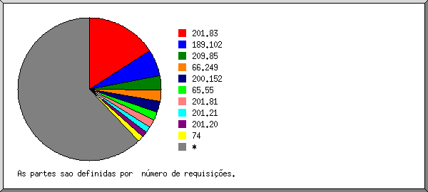
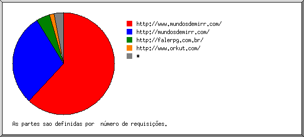
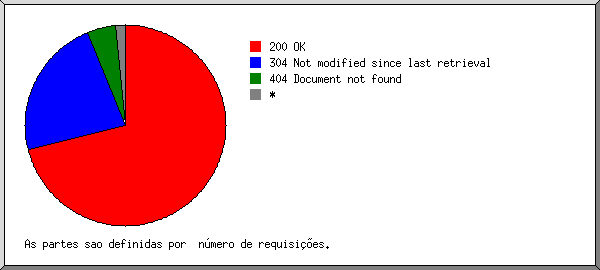
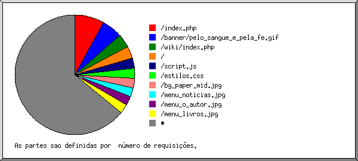

Estatísticas do Servidor Web de mundosdemirr.com
Estatísticas do Servidor Web de mundosdemirr.com
Começo do programa em Sab-30-Dez-2006 04:45.
Análise de requisições desde Qui-23-Nov-2006 21:12 até Sex-29-Dez-2006 14:32 (35,72 dias).
Estatísticas do Servidor Web de mundosdemirr.comComeço do programa em Sab-30-Dez-2006 04:45.
Análise de requisições desde Qui-23-Nov-2006 21:12 até Sex-29-Dez-2006 14:32 (35,72 dias).
(Ir a: Início | Sumário Geral | Relatório Mensal | Resumo Diário | Resumo Horário | Relatório de Domínios | Relatório de organizações | Relatório de referência redirecionada | Relatório de referência falhada | Relatório do site de referência | Relatório de Browsers | Resumo de Browsers | Relatório de Sistemas Operacionais | Relatório de Códigos de Estado | Relatório de Tamanho de Arquivo | Relatório de Tipos de Arquivo | Relatório de Diretórios | Relatório de Requisições)
Os valores entre parêntesis referem-se aos 7 dias até 30-Dez-2006 04:45.
Requisições atendidas: 23.874 (284)
Número médio de requisições atendidas por dia: 668 (40)
Pedidos de páginas atendidas: 365 (8)
Número médio de requisições de páginas atendidas por dia: 10 (1)
Requisições que falharam: 378 (3)
Requisições redirecionadas: 462 (5)
Arquivos diferentes solicitados: 136 (46)
Máquinas diferentes atendidas: 22 (4)
Tráfego total: 47,80 megabytes (1,09 megabytes)
Tráfego médio transferido por dia: 1,34 megabytes (159,75 kilobytes)
(Ir a: Início | Sumário Geral | Relatório Mensal | Resumo Diário | Resumo Horário | Relatório de Domínios | Relatório de organizações | Relatório de referência redirecionada | Relatório de referência falhada | Relatório do site de referência | Relatório de Browsers | Resumo de Browsers | Relatório de Sistemas Operacionais | Relatório de Códigos de Estado | Relatório de Tamanho de Arquivo | Relatório de Tipos de Arquivo | Relatório de Diretórios | Relatório de Requisições)
Cada unidade ( ) representa 8 requisições de páginas ou fração.
) representa 8 requisições de páginas ou fração.
| mês | N.req | Pags. | |
|---|---|---|---|
| Nov 2006 | 3310 | 62 |  |
| Dez 2006 | 20564 | 303 |    |
Mês mais movimentado: Dez 2006 (303 requisições de páginas).
(Ir a: Início | Sumário Geral | Relatório Mensal | Resumo Diário | Resumo Horário | Relatório de Domínios | Relatório de organizações | Relatório de referência redirecionada | Relatório de referência falhada | Relatório do site de referência | Relatório de Browsers | Resumo de Browsers | Relatório de Sistemas Operacionais | Relatório de Códigos de Estado | Relatório de Tamanho de Arquivo | Relatório de Tipos de Arquivo | Relatório de Diretórios | Relatório de Requisições)
Cada unidade () representa 3 requisições de páginas ou fração.
| dia | N.req | Pags. | |
|---|---|---|---|
| Dom | 72 | 72 |  |
| Seg | 5395 | 19 | |
| Ter | 2215 | 62 | |
| Qua | 5627 | 45 | |
| Qui | 8150 | 125 | |
| Sex | 1894 | 35 | |
| Sab | 521 | 7 | |
(Ir a: Início | Sumário Geral | Relatório Mensal | Resumo Diário | Resumo Horário | Relatório de Domínios | Relatório de organizações | Relatório de referência redirecionada | Relatório de referência falhada | Relatório do site de referência | Relatório de Browsers | Resumo de Browsers | Relatório de Sistemas Operacionais | Relatório de Códigos de Estado | Relatório de Tamanho de Arquivo | Relatório de Tipos de Arquivo | Relatório de Diretórios | Relatório de Requisições)
Cada unidade () representa 2 requisições de páginas ou fração.
| h | N.req | Pags. | |
|---|---|---|---|
| 0 | 845 | 1 | |
| 1 | 420 | 14 | |
| 2 | 514 | 0 | |
| 3 | 0 | 0 | |
| 4 | 0 | 0 | |
| 5 | 0 | 0 | |
| 6 | 0 | 0 | |
| 7 | 0 | 0 | |
| 8 | 7 | 7 | |
| 9 | 13 | 13 | |
| 10 | 1305 | 54 | |
| 11 | 2648 | 14 | |
| 12 | 2463 | 18 | |
| 13 | 2833 | 5 | |
| 14 | 1274 | 10 | |
| 15 | 20 | 0 | |
| 16 | 5 | 5 | |
| 17 | 218 | 18 | |
| 18 | 1477 | 24 | |
| 19 | 1224 | 47 | |
| 20 | 574 | 10 | |
| 21 | 963 | 74 | |
| 22 | 1026 | 11 | |
| 23 | 6045 | 40 | |
(Ir a: Início | Sumário Geral | Relatório Mensal | Resumo Diário | Resumo Horário | Relatório de Domínios | Relatório de organizações | Relatório de referência redirecionada | Relatório de referência falhada | Relatório do site de referência | Relatório de Browsers | Resumo de Browsers | Relatório de Sistemas Operacionais | Relatório de Códigos de Estado | Relatório de Tamanho de Arquivo | Relatório de Tipos de Arquivo | Relatório de Diretórios | Relatório de Requisições)
Mostrando os domínios, ordenados por quantidade de tráfego.
| N.req | %bytes | domínio |
|---|---|---|
| 23874 | 100% | [endereço IP não resolvido] |
(Ir a: Início | Sumário Geral | Relatório Mensal | Resumo Diário | Resumo Horário | Relatório de Domínios | Relatório de organizações | Relatório de referência redirecionada | Relatório de referência falhada | Relatório do site de referência | Relatório de Browsers | Resumo de Browsers | Relatório de Sistemas Operacionais | Relatório de Códigos de Estado | Relatório de Tamanho de Arquivo | Relatório de Tipos de Arquivo | Relatório de Diretórios | Relatório de Requisições)

Mostrando as organizações, ordenadas por número de requisições.
| N.req | %bytes | organização |
|---|---|---|
| 12832 | 45,61% | 200.152 |
| 7325 | 20,80% | 201.83 |
| 2408 | 24,69% | 201.81 |
| 519 | 1,08% | 201.26 |
| 492 | 3,87% | 201.92 |
| 184 | 2,30% | 207.44 |
| 26 | 0,39% | 64.246 |
| 20 | 0,30% | 216.145 |
| 17 | 0,25% | 38 |
| 16 | 0,24% | 67.79 |
| 13 | 0,19% | 66.194 |
| 8 | 0,12% | 208.17 |
| 7 | 0,10% | 65.214 |
| 7 | 0,06% | 66.249 |
(Ir a: Início | Sumário Geral | Relatório Mensal | Resumo Diário | Resumo Horário | Relatório de Domínios | Relatório de organizações | Relatório de referência redirecionada | Relatório de referência falhada | Relatório do site de referência | Relatório de Browsers | Resumo de Browsers | Relatório de Sistemas Operacionais | Relatório de Códigos de Estado | Relatório de Tamanho de Arquivo | Relatório de Tipos de Arquivo | Relatório de Diretórios | Relatório de Requisições)

Mostrando os URLs de referência, ordenados por número de requisições redirecionadas.
| N.req | URL |
|---|---|
| 106 | http://www.mundosdemirr.com/admin/index.php |
| 14 | http://www.mundosdemirr.com/admin/index.php?m=posts&id=3 |
| 11 | http://www.mundosdemirr.com/admin/index.php?m=novo_post |
| 87 | http://www.mundosdemirr.com/novo/admin/index.php |
| 22 | http://www.mundosdemirr.com/novo/admin/index.php?m=posts |
| 10 | http://www.mundosdemirr.com/novo/admin/index.php?m=posts&id=3 |
| 39 | http://www.mundosdemirr.com/novo/admin/ |
| 21 | http://br.f306.mail.yahoo.com/ym/ShowLetter |
| 11 | http://br.f306.mail.yahoo.com/ym/ShowLetter?MsgId=6512_4359864_527_2261_1891_0_53253_4388_3148307978&Idx=10&YY=42311&y5beta=yes&y5beta=yes&inc=25&order=up&sort=date&pos=0&view=&head=&box=Arquivo |
| 10 | http://br.f306.mail.yahoo.com/ym/ShowLetter?MsgId=6512_4359864_527_2261_1891_0_53253_4388_3148307978&Idx=10&YY=50835&y5beta=yes&y5beta=yes&inc=25&order=up&sort=date&pos=0&view=&head=&box=Arquivo |
| 16 | http://br.f306.mail.yahoo.com/dc/launch |
| 16 | http://br.f306.mail.yahoo.com/dc/launch?.rand=f6gujbo0m99t4 |
(Ir a: Início | Sumário Geral | Relatório Mensal | Resumo Diário | Resumo Horário | Relatório de Domínios | Relatório de organizações | Relatório de referência redirecionada | Relatório de referência falhada | Relatório do site de referência | Relatório de Browsers | Resumo de Browsers | Relatório de Sistemas Operacionais | Relatório de Códigos de Estado | Relatório de Tamanho de Arquivo | Relatório de Tipos de Arquivo | Relatório de Diretórios | Relatório de Requisições)

Mostrando os URLs de referência, ordenados por número de requisições que falharam.
| N.req | URL |
|---|---|
| 46 | http://www.whois.sc/ |
| 42 | http://www.mundosdemirr.com/novo/index.php |
| 33 | http://www.mundosdemirr.com/novo/index.php?pg=o_autor |
| 19 | http://www.mundosdemirr.com/novo/admin/index.php |
| 10 | http://www.mundosdemirr.com/novo/admin/index.php?m=posts&id=3&aprovar=2 |
(Ir a: Início | Sumário Geral | Relatório Mensal | Resumo Diário | Resumo Horário | Relatório de Domínios | Relatório de organizações | Relatório de referência redirecionada | Relatório de referência falhada | Relatório do site de referência | Relatório de Browsers | Resumo de Browsers | Relatório de Sistemas Operacionais | Relatório de Códigos de Estado | Relatório de Tamanho de Arquivo | Relatório de Tipos de Arquivo | Relatório de Diretórios | Relatório de Requisições)

Mostrando os sites de referência, ordenados por número de requisições.
| N.req | site |
|---|---|
| 22446 | http://www.mundosdemirr.com/ |
| 46 | http://www.whois.sc/ |
(Ir a: Início | Sumário Geral | Relatório Mensal | Resumo Diário | Resumo Horário | Relatório de Domínios | Relatório de organizações | Relatório de referência redirecionada | Relatório de referência falhada | Relatório do site de referência | Relatório de Browsers | Resumo de Browsers | Relatório de Sistemas Operacionais | Relatório de Códigos de Estado | Relatório de Tamanho de Arquivo | Relatório de Tipos de Arquivo | Relatório de Diretórios | Relatório de Requisições)

Mostrando os browsers com pelo menos 1 requisição de uma página, ordenados por número de requisições de páginas.
| N.req | Pags. | Browser |
|---|---|---|
| 20649 | 184 | Mozilla/4.0 (compatible; MSIE 6.0; Windows NT 5.1; SV1) |
| 2160 | 47 | Mozilla/5.0 (Windows; U; Windows NT 5.1; pt-BR; rv:1.8.1) Gecko/20061010 Firefox/2.0 |
| 46 | 46 | SurveyBot/2.3 (Whois Source) |
| 13 | 13 | Mozilla/4.0 (compatible; MSIE 6.0; Windows NT 5.1; Q312463) |
| 312 | 13 | Mozilla/5.0 (Windows; U; Windows NT 5.1; en-US; rv:1.8.0.8) Gecko/20061025 Firefox/1.5.0.8 |
| 12 | 12 | Mozilla/4.0 (compatible; MSIE 6.0; Windows XP) |
| 8 | 8 | Mozilla/5.0 (X11; U; Linux i686; en-US; rv:1.7.12) Gecko/20050922 Fedora/1.0.7-1.1.fc4 Firefox/1.0.7 |
| 248 | 7 | Mozilla/4.0 (compatible; MSIE 6.0; Windows NT 5.1; SV1; EmbeddedWB 14,52 from: http://www.bsalsa.com/ EmbeddedWB 14,52; .NET CLR 2.0.50727) |
| 7 | 7 | Mozilla/2.0 (compatible; Ask Jeeves/Teoma; +http://sp.ask.com/docs/about/tech_crawling.html) |
| 7 | 7 | Mozilla/5.0 (compatible; Googlebot/2.1; +http://www.google.com/bot.html) |
| 5 | 5 | panscient.com |
| 207 | 0 | [não listados: 1 Browser] |
(Ir a: Início | Sumário Geral | Relatório Mensal | Resumo Diário | Resumo Horário | Relatório de Domínios | Relatório de organizações | Relatório de referência redirecionada | Relatório de referência falhada | Relatório do site de referência | Relatório de Browsers | Resumo de Browsers | Relatório de Sistemas Operacionais | Relatório de Códigos de Estado | Relatório de Tamanho de Arquivo | Relatório de Tipos de Arquivo | Relatório de Diretórios | Relatório de Requisições)

Mostrando os browsers com pelo menos 1 requisição de uma página, ordenados por número de requisições de páginas.
| no. | N.req | Pags. | Browser |
|---|---|---|---|
| 1 | 21129 | 216 | MSIE |
| 2 | 2480 | 68 | Firefox |
| 3 | 46 | 46 | SurveyBot |
| 4 | 14 | 14 | Netscape (compatible) |
| 5 | 5 | 5 | panscient.com |
(Ir a: Início | Sumário Geral | Relatório Mensal | Resumo Diário | Resumo Horário | Relatório de Domínios | Relatório de organizações | Relatório de referência redirecionada | Relatório de referência falhada | Relatório do site de referência | Relatório de Browsers | Resumo de Browsers | Relatório de Sistemas Operacionais | Relatório de Códigos de Estado | Relatório de Tamanho de Arquivo | Relatório de Tipos de Arquivo | Relatório de Diretórios | Relatório de Requisições)

Mostrando os Sistemas Operacionais, ordenados por número de requisições de páginas.
| no. | N.req | Pags. | Sistema Operacional |
|---|---|---|---|
| 1 | 23601 | 276 | Windows |
| 23601 | 276 | Windows XP | |
| 2 | 65 | 65 | Sistema Operacional desconhecido |
| 3 | 8 | 8 | Unix |
| 8 | 8 | Linux |
(Ir a: Início | Sumário Geral | Relatório Mensal | Resumo Diário | Resumo Horário | Relatório de Domínios | Relatório de organizações | Relatório de referência redirecionada | Relatório de referência falhada | Relatório do site de referência | Relatório de Browsers | Resumo de Browsers | Relatório de Sistemas Operacionais | Relatório de Códigos de Estado | Relatório de Tamanho de Arquivo | Relatório de Tipos de Arquivo | Relatório de Diretórios | Relatório de Requisições)

Mostrando os códigos de estado, por ordem numérica.
| N.req | cod. estado |
|---|---|
| 9382 | 200 OK |
| 46 | 206 Partial content |
| 85 | 301 Document moved permanently |
| 377 | 302 Document found elsewhere |
| 14446 | 304 Not modified since last retrieval |
| 378 | 404 Document not found |
(Ir a: Início | Sumário Geral | Relatório Mensal | Resumo Diário | Resumo Horário | Relatório de Domínios | Relatório de organizações | Relatório de referência redirecionada | Relatório de referência falhada | Relatório do site de referência | Relatório de Browsers | Resumo de Browsers | Relatório de Sistemas Operacionais | Relatório de Códigos de Estado | Relatório de Tamanho de Arquivo | Relatório de Tipos de Arquivo | Relatório de Diretórios | Relatório de Requisições)

| tamanho | N.req | %bytes |
|---|---|---|
| 0 | 14446 | |
| 1B- 10B | 0 | |
| 11B- 100B | 153 | 0,01% |
| 101B- 1kB | 2726 | 3,17% |
| 1kB- 10kB | 5591 | 44,66% |
| 10kB-100kB | 956 | 51,69% |
| 100kB- 1MB | 2 | 0,46% |
(Ir a: Início | Sumário Geral | Relatório Mensal | Resumo Diário | Resumo Horário | Relatório de Domínios | Relatório de organizações | Relatório de referência redirecionada | Relatório de referência falhada | Relatório do site de referência | Relatório de Browsers | Resumo de Browsers | Relatório de Sistemas Operacionais | Relatório de Códigos de Estado | Relatório de Tamanho de Arquivo | Relatório de Tipos de Arquivo | Relatório de Diretórios | Relatório de Requisições)

Mostrando as extensões com pelo menos 0,1% do tráfego, ordenadas por quantidade de tráfego.
| N.req | %bytes | extensão |
|---|---|---|
| 12497 | 50,78% | .jpg |
| 5836 | 41,01% | .php |
| 365 | 3,38% | [diretórios] |
| 175 | 2,31% | [sem extensão] |
| 1477 | 1,45% | .css |
| 3427 | 1,05% | .gif |
| 97 | 0,02% | [não listadas: 1 extensão] |
(Ir a: Início | Sumário Geral | Relatório Mensal | Resumo Diário | Resumo Horário | Relatório de Domínios | Relatório de organizações | Relatório de referência redirecionada | Relatório de referência falhada | Relatório do site de referência | Relatório de Browsers | Resumo de Browsers | Relatório de Sistemas Operacionais | Relatório de Códigos de Estado | Relatório de Tamanho de Arquivo | Relatório de Tipos de Arquivo | Relatório de Diretórios | Relatório de Requisições)

Mostrando os diretórios com pelo menos 0,01% do tráfego, ordenados por quantidade de tráfego.
| N.req | %bytes | diretório |
|---|---|---|
| 14232 | 53,71% | /novo/ |
| 8901 | 42,73% | [diretório raiz] |
| 621 | 3,32% | /admin/ |
| 120 | 0,23% | /contador/ |
(Ir a: Início | Sumário Geral | Relatório Mensal | Resumo Diário | Resumo Horário | Relatório de Domínios | Relatório de organizações | Relatório de referência redirecionada | Relatório de referência falhada | Relatório do site de referência | Relatório de Browsers | Resumo de Browsers | Relatório de Sistemas Operacionais | Relatório de Códigos de Estado | Relatório de Tamanho de Arquivo | Relatório de Tipos de Arquivo | Relatório de Diretórios | Relatório de Requisições)

Mostrando os arquivos com pelo menos 20 requisições, ordenados por número de requisições.
| N.req | %bytes | ult. horario | arquivo |
|---|---|---|---|
| 3010 | 11,86% | 14/Dez/2006 10:15 | /novo/admin/index.php |
| 1220 | 1,58% | 14/Dez/2006 10:15 | /novo/admin/index.php?m=posts |
| 439 | 3,31% | 14/Dez/2006 10:15 | /novo/admin/index.php?m=novo_post |
| 319 | 0,78% | 14/Dez/2006 10:09 | /novo/admin/index.php?m=posts&id=1 |
| 249 | 1,26% | 14/Dez/2006 10:15 | /novo/admin/index.php?m=posts&id=3 |
| 130 | 2,37% | 13/Dez/2006 18:58 | /novo/admin/index.php?m=posts&edit=3 |
| 110 | 0,65% | 13/Dez/2006 18:52 | /novo/admin/index.php?m=posts&id=3&aprovar=2 |
| 70 | 0,41% | 13/Dez/2006 19:01 | /novo/admin/index.php?m=posts&id=3&aprovar=1 |
| 33 | 0,04% | 12/Dez/2006 20:14 | /novo/admin/index.php?m=comentarios |
| 30 | 0,17% | 13/Dez/2006 19:01 | /novo/admin/index.php?m=posts&id=3&desaprovar=1 |
| 30 | 0,57% | 13/Dez/2006 18:56 | /novo/admin/index.php?m=posts&edit=1 |
| 20 | 0,12% | 13/Dez/2006 18:52 | /novo/admin/index.php?m=posts&id=3&desaprovar=2 |
| 20 | 0,13% | 13/Dez/2006 18:53 | /novo/admin/index.php?m=posts&id=3&apaga=2 |
| 20 | 0,12% | 13/Dez/2006 18:55 | /novo/admin/index.php?m=posts&id=3&apagar=2 |
| 10 | 0,02% | 13/Dez/2006 18:58 | /novo/admin/index.php?m=posts&id= |
| 10 | 0,02% | 13/Dez/2006 14:21 | /novo/admin/index.php?m=posts&id=2 |
| 1314 | 1,13% | 13/Dez/2006 20:30 | /novo/admin/estilos.css |
| 961 | 14,57% | 7/Dez/2006 19:07 | /novo/index.php |
| 357 | 7,13% | 7/Dez/2006 19:07 | /novo/index.php?pg=o_autor |
| 102 | 1,10% | 7/Dez/2006 19:07 | /novo/index.php?pg=t2g |
| 93 | 1,58% | 7/Dez/2006 19:07 | /novo/index.php?pg=pre_venda |
| 70 | 1,33% | 7/Dez/2006 19:07 | /novo/index.php?pg=livros |
| 45 | 0,45% | 7/Dez/2006 19:07 | /novo/index.php?pg=noticias |
| 39 | 0,39% | 7/Dez/2006 19:07 | /novo/index.php?pg=agradecimentos |
| 32 | 0,41% | 29/Nov/2006 23:12 | /novo/index.php?pg=arquivo&data=06-11 |
| 22 | 0,27% | 30/Nov/2006 12:03 | /novo/index.php?pg=arquivo&data=06-12 |
| 14 | 0,19% | 5/Dez/2006 01:23 | /novo/index.php?pg=arquivos&data=06-11 |
| 14 | 0,19% | 5/Dez/2006 01:23 | /novo/index.php?pg=arquivos&data=06-12 |
| 764 | 10,13% | 25/Dez/2006 18:42 | /index.php |
| 166 | 2,31% | 16/Dez/2006 02:30 | /index.php?pg=arquivos&id=3 |
| 161 | 2,18% | 25/Dez/2006 18:41 | /index.php?pg=arquivos&data=2006-12 |
| 81 | 0,88% | 14/Dez/2006 11:05 | /index.php?pg=arquivos&data=6-12 |
| 81 | 0,98% | 14/Dez/2006 18:18 | /index.php?pg=arquivos&id=1 |
| 33 | 0,69% | 25/Dez/2006 18:41 | /index.php?pg=o_autor |
| 22 | 0,21% | 25/Dez/2006 18:42 | /index.php?pg=t2g |
| 20 | 0,36% | 25/Dez/2006 18:42 | /index.php?pg=pre_venda |
| 20 | 0,21% | 25/Dez/2006 18:41 | /index.php?pg=agradecimentos |
| 20 | 0,20% | 25/Dez/2006 18:40 | /index.php?pg=noticias |
| 11 | 0,22% | 25/Dez/2006 18:41 | /index.php?pg=livros |
| 752 | 0,45% | 7/Dez/2006 19:07 | /novo/menu_noticias.jpg |
| 648 | 4,72% | 25/Dez/2006 18:40 | /bg_paper_mid.jpg |
| 631 | 8,10% | 7/Dez/2006 19:07 | /novo/bg_paper_mid.jpg |
| 592 | 0,03% | 7/Dez/2006 19:07 | /novo/divider.gif |
| 592 | 3,18% | 7/Dez/2006 19:07 | /novo/bg_paper_bot.jpg |
| 591 | 8,35% | 7/Dez/2006 19:07 | /novo/head.jpg |
| 591 | 0,34% | 7/Dez/2006 19:07 | /novo/menu_agradecimentos.jpg |
| 590 | 0,33% | 7/Dez/2006 19:07 | /novo/menu_livros.jpg |
| 527 | 3,16% | 25/Dez/2006 18:53 | /admin/index.php |
| 96 | 0,16% | 25/Dez/2006 18:52 | /admin/index.php?m=posts |
| 55 | 1,01% | 25/Dez/2006 18:53 | /admin/index.php?m=novo_post |
| 47 | 0,43% | 25/Dez/2006 18:53 | /admin/index.php?m=posts&id=3 |
| 43 | 0,11% | 25/Dez/2006 18:53 | /admin/index.php?m=contador |
| 18 | 0,05% | 25/Dez/2006 18:52 | /admin/index.php?m=posts&id=1 |
| 15 | 0,32% | 25/Dez/2006 18:53 | /admin/index.php?m=posts&edit=3 |
| 11 | 0,02% | 25/Dez/2006 18:53 | /admin/index.php?m=posts&id= |
| 484 | 0,40% | 7/Dez/2006 19:07 | /novo/menu_t2g.jpg |
| 466 | 0,05% | 25/Dez/2006 18:40 | /icon.gif |
| 457 | 0,49% | 25/Dez/2006 18:40 | /menu_o_autor.jpg |
| 455 | 0,55% | 25/Dez/2006 18:40 | /menu_noticias.jpg |
| 446 | 0,43% | 25/Dez/2006 18:40 | /bg_menu_foot.jpg |
| 446 | 0,45% | 25/Dez/2006 18:40 | /menu_agradecimentos.jpg |
| 446 | 0,47% | 25/Dez/2006 18:40 | /menu_pre_venda.jpg |
| 446 | 0,38% | 25/Dez/2006 18:40 | /bg_menu_body.jpg |
| 446 | 0,54% | 25/Dez/2006 18:40 | /menu_t2g.jpg |
| 446 | 12,89% | 25/Dez/2006 18:40 | /head.jpg |
| 446 | 0,44% | 25/Dez/2006 18:40 | /menu_livros.jpg |
| 446 | 0,18% | 25/Dez/2006 18:40 | /menu_arquivos.gif |
| 446 | 0,42% | 25/Dez/2006 18:40 | /bg_menu_head.jpg |
| 437 | 0,04% | 25/Dez/2006 18:40 | /divider.gif |
| 418 | 0,03% | 7/Dez/2006 19:07 | /novo/divider2.gif |
| 413 | 0,26% | 7/Dez/2006 19:07 | /novo/bg_menu_foot.jpg |
| 411 | 0,25% | 7/Dez/2006 19:07 | /novo/bg_menu_head.jpg |
| 407 | 0,22% | 7/Dez/2006 19:07 | /novo/bg_menu_body.jpg |
| 404 | 0,27% | 7/Dez/2006 19:07 | /novo/menu_o_autor.jpg |
| 383 | 4,45% | 25/Dez/2006 18:40 | /bg_paper_bot.jpg |
| 383 | 0,04% | 25/Dez/2006 18:40 | /divider2.gif |
| 382 | 0,29% | 7/Dez/2006 19:07 | /novo/menu_pre_venda.jpg |
| 337 | 0,13% | 4/Dez/2006 23:31 | /novo/arquivos.gif |
| 297 | 1,63% | 7/Dez/2006 19:07 | /novo/claudio_villa.jpg |
| 279 | 0,89% | 25/Dez/2006 18:34 | /comentarios.php |
| 216 | 0,72% | 25/Dez/2006 18:34 | /comentarios.php?id=3 |
| 36 | 0,13% | 25/Dez/2006 18:32 | /comentarios.php?id=1 |
| 27 | 0,04% | 14/Dez/2006 12:46 | /comentarios.php?post=3 |
| 223 | 0,02% | 7/Dez/2006 19:07 | /novo/icon.gif |
| 209 | 0,06% | 29/Nov/2006 23:23 | /novo/menu_prevenda.jpg |
| 209 | 0,06% | 29/Nov/2006 23:23 | /novo/menu_oautor.jpg |
| 170 | 2,18% | 29/Dez/2006 14:32 | / |
| 120 | 0,23% | 25/Dez/2006 18:40 | /contador/contador.php |
| 120 | 0,23% | 25/Dez/2006 18:40 | /contador/contador.php?id=contador |
| 117 | 0,06% | 7/Dez/2006 19:07 | /novo/menu_arquivos.gif |
| 103 | 1,39% | 16/Dez/2006 02:30 | /maca_facao_e_minimo |
| 100 | 0,01% | 13/Dez/2006 17:54 | /novo/admin/str_flat.php |
| 10 | 13/Dez/2006 14:37 | /novo/admin/str_flat.php?PHPSESSID=ff0e66d18c5a1b85f702df8ee5fefc6d&str=Ma%E7%E3&rnd=0.2738532437452847 | |
| 10 | 13/Dez/2006 14:38 | /novo/admin/str_flat.php?PHPSESSID=ff0e66d18c5a1b85f702df8ee5fefc6d&str=Ma%E7%E3 Banana Fac%E3o %E9 m%EDnimo &rnd=0.7402266025490883 | |
| 10 | 13/Dez/2006 17:54 | /novo/admin/str_flat.php?PHPSESSID=d8857d58f08b1090de12ca210ee12fe7&str=&rnd=0.6867805371139173 | |
| 10 | 13/Dez/2006 14:38 | /novo/admin/str_flat.php?PHPSESSID=ff0e66d18c5a1b85f702df8ee5fefc6d&str=Ma%E7%E3 Banana Fac%E3o %E9 m%EDnimo&rnd=0.174555185804185 | |
| 10 | 13/Dez/2006 17:54 | /novo/admin/str_flat.php?PHPSESSID=d8857d58f08b1090de12ca210ee12fe7&str=&rnd=0.9002787473475275 | |
| 10 | 13/Dez/2006 14:37 | /novo/admin/str_flat.php?PHPSESSID=ff0e66d18c5a1b85f702df8ee5fefc6d&str=Ma%E7%E3&rnd=0.3482973816215118 | |
| 10 | 13/Dez/2006 17:54 | /novo/admin/str_flat.php?PHPSESSID=d8857d58f08b1090de12ca210ee12fe7&str=&rnd=0.3093540281233172 | |
| 10 | 13/Dez/2006 14:38 | /novo/admin/str_flat.php?PHPSESSID=ff0e66d18c5a1b85f702df8ee5fefc6d&str=Ma%E7%E3 Banana Fac%E3o %E9 m%EDnimo&rnd=0.4029505575919542 | |
| 10 | 13/Dez/2006 14:38 | /novo/admin/str_flat.php?PHPSESSID=ff0e66d18c5a1b85f702df8ee5fefc6d&str=Ma%E7%E3 Banana Fac%E3o %E9 m%EDnimo&rnd=0.8075649279868297 | |
| 10 | 13/Dez/2006 14:52 | /novo/admin/str_flat.php?PHPSESSID=ff0e66d18c5a1b85f702df8ee5fefc6d&str=Ma%E7%E3 Banana Fac%E3o %E9 m%EDnimo a&rnd=0.35194159377190376 | |
| 97 | 0,19% | 25/Dez/2006 18:40 | /estilos.css |
| 97 | 0,02% | 25/Dez/2006 18:40 | /script.js |
| 92 | 0,07% | 14/Dez/2006 10:09 | /novo/admin/ |
| 85 | 1,11% | 7/Dez/2006 19:07 | /novo/ |
| 72 | 0,92% | 14/Dez/2006 18:18 | /teste |
| 66 | 0,14% | 25/Dez/2006 18:52 | /admin/estilos.css |
| 54 | 0,14% | 14/Dez/2006 10:38 | /url.php |
| 27 | 0,13% | 14/Dez/2006 10:38 | /url.php?path=teste |
| 18 | 14/Dez/2006 10:37 | /url.php?path=admin | |
| 22 | 0,35% | 25/Dez/2006 18:41 | /claudio_villa.jpg |
| 48 | 0,51% | 25/Dez/2006 18:53 | [não listados: 5 arquivos] |